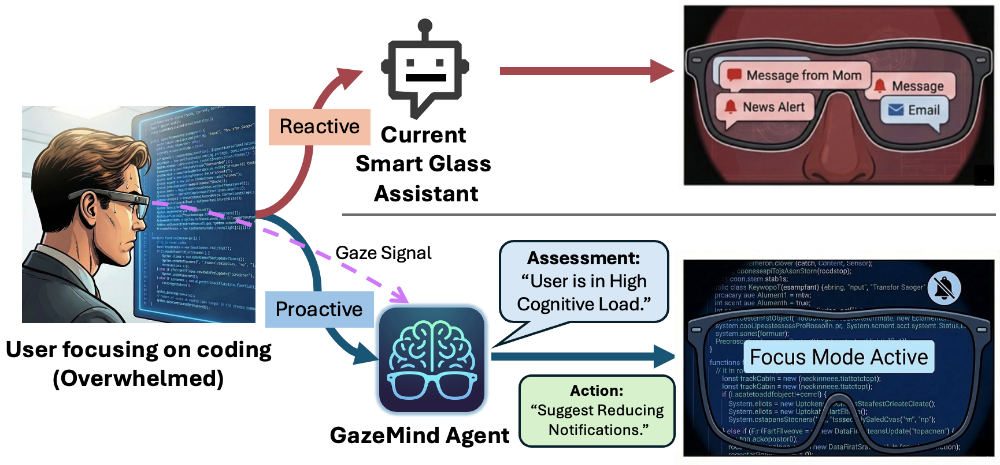
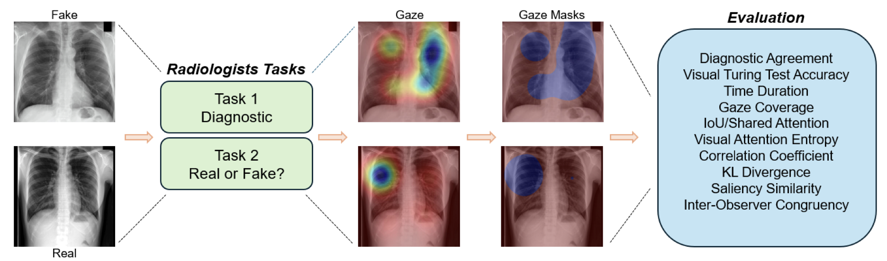
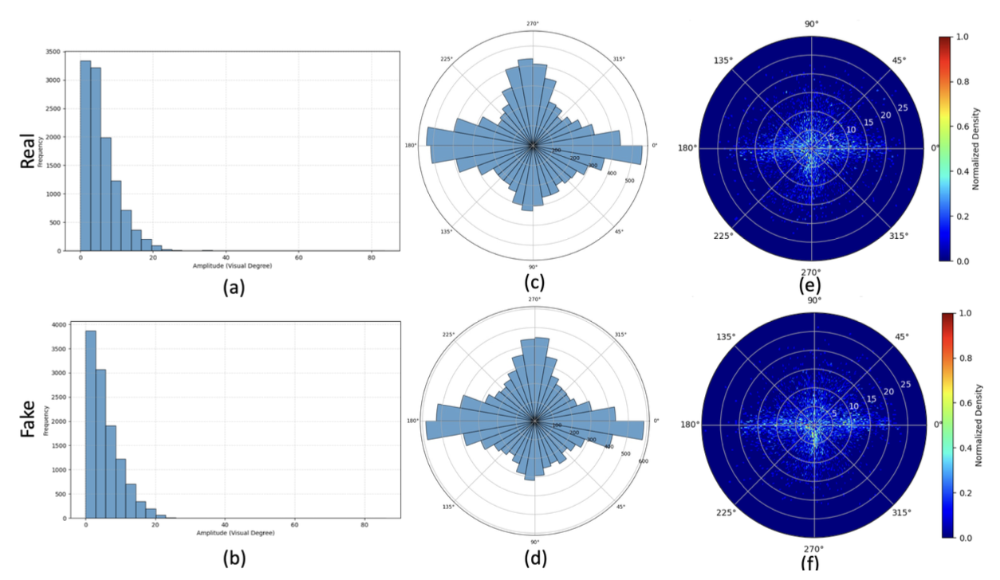
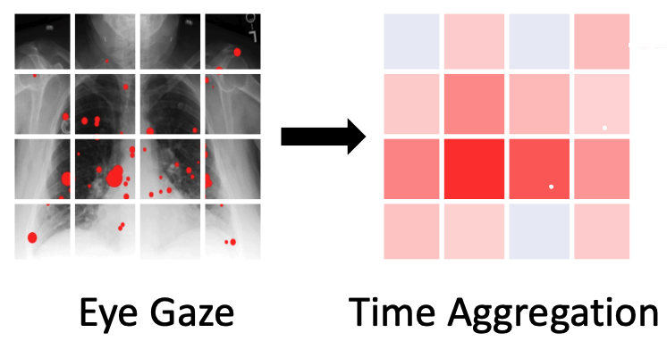
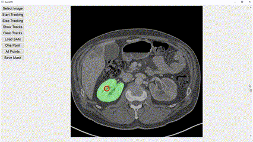

GazeMind: A Gaze-Guided LLM Agent for Personalized Cognitive Load Assessment
Hi, thanks for stopping by! I recently completed my Ph.D. in Electrical and Computer Engineering at Northwestern University, advised by Prof. Ulas Bagci and Prof. Aggelos K. Katsaggelos. My dissertation, Toward Hybrid Intelligence, studies how human perception can guide and evaluate AI across medical imaging and wearable AR.
Before Northwestern, I received my B.Eng. in Computer Science from ShanghaiTech University in 2022, where I worked with Prof. Dinggang Shen. I have also worked at United Imaging Intelligence (2024) and Meta Reality Labs (2025, 2026) with many amazing collaborators.
I mainly work on human-centered multimodal AI, bringing human signals such as eye gaze and physiological time series into multimodal LLMs. Topics include LLM agents for smart glasses, gaze-guided learning, personalization, interactive segmentation, and post-training (SFT, RL) for multimodal ranking.
Electrical and Computer Engineering, Ph.D.
Computer Science, B.Eng.
Research Scientist Intern
Research Scientist Intern
Research Scientist Intern
* Equal contribution

GazeMind: A Gaze-Guided LLM Agent for Personalized Cognitive Load Assessment
Order-aware Interactive Segmentation


Shifts in Doctors' Eye Movements Between Real and AI-Generated Medical Images


Beam-wise Dose Composition Learning for Head and Neck Cancer Dose Prediction in Radiotherapy
AdverIN: Monotonic Adversarial Intensity Attack for Domain Generalization in Medical Image Segmentation
Seq2Time: Sequential Knowledge Transfer for Video LLM Temporal Grounding
Improving Self-Supervised Medical Image Pre-Training by Early Alignment with Human Eye Gaze Information
DiffBoost: Enhancing Medical Image Segmentation via Text-Guided Diffusion Model
Large-scale Multi-center CT and MRI Segmentation of Pancreas with Deep Learning
Gaze-directed Vision GNN for Mitigating Shortcut Learning in Medical Image
Domain Generalization with Fourier Transform and Soft Thresholding
Domain Generalization with Correlated Style Uncertainty
Real-time Multi-class Helmet Violation Detection Using Few-shot Data Sampling Technique and YOLOv8
Deep Learning-based Head and Neck Radiotherapy Planning Dose Prediction via Beam-wise Dose Decomposition
Globally Convergent Algorithms for Learning Multivariate Generalized Gaussian Distributions